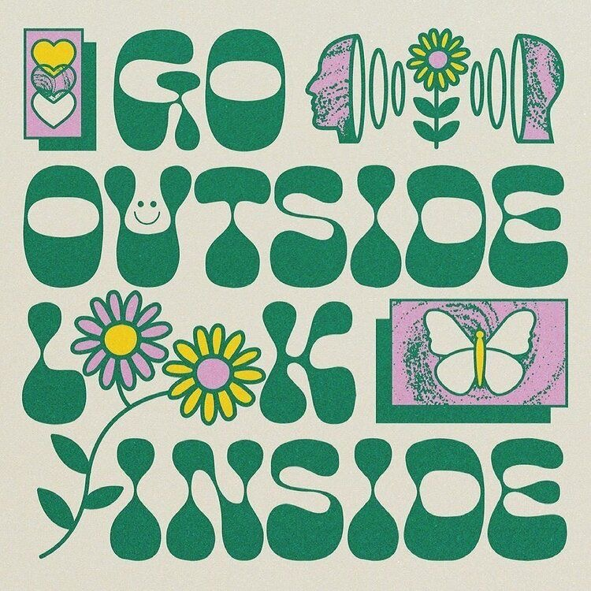

Lab 12: Advanced Block-Level Styling II

Subject
The goal for this lab was to experiment with block level styling. Some of the things we had to use were ovwrflow, float, and centering things horizontally and vertically.
Challenge
While working on this lab I had some difficulties but was able to solve most of them. When trying to style the "center-horiz, floated, center-img, and center-both" I forgot to add the class and spend some time figuring out why I couldn't see the border. Another problem I had was center-both the image. I changed the width to 150 and used the "50% top and 50% left" but the Image didn't centeres as I how I wanted, so I decßided to leave it at 15% so it looked visually horiz/vert centered.
Results
Here are the results:
Floated
sample text.
Center-horizontally
sample text.